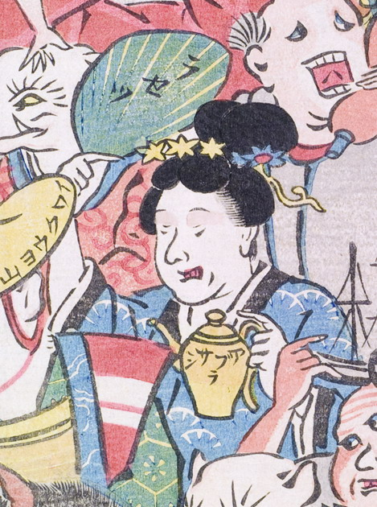

羅刹；ラセツ，油さし；アブラサシ，女；オンナ

油さしと扇を持った女。扇にはラセツとある。髪飾りを付け、大きく髪を結っている。牙が生えているようにも見える。
著作者：玉園／出典：親書誌：U426_nichibunken_0145：画本西遊記百鬼夜行ノ圖；エホンサイユウキヒャッキヤギョウノズ／日付：2009／資源識別子：U426_nichibunken_0145_0017_0000
Copyright (c)2010- International Research Center for Japanese Studies, Kyoto, Japan. All rights reserved.